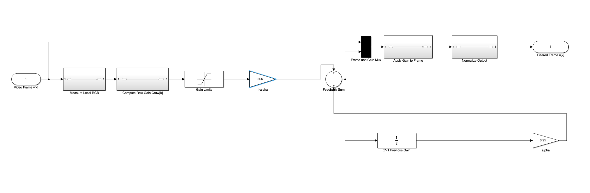
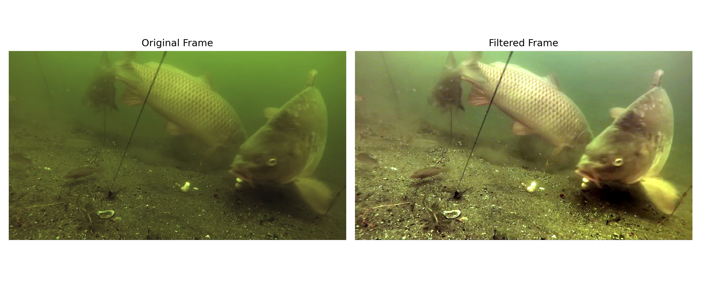
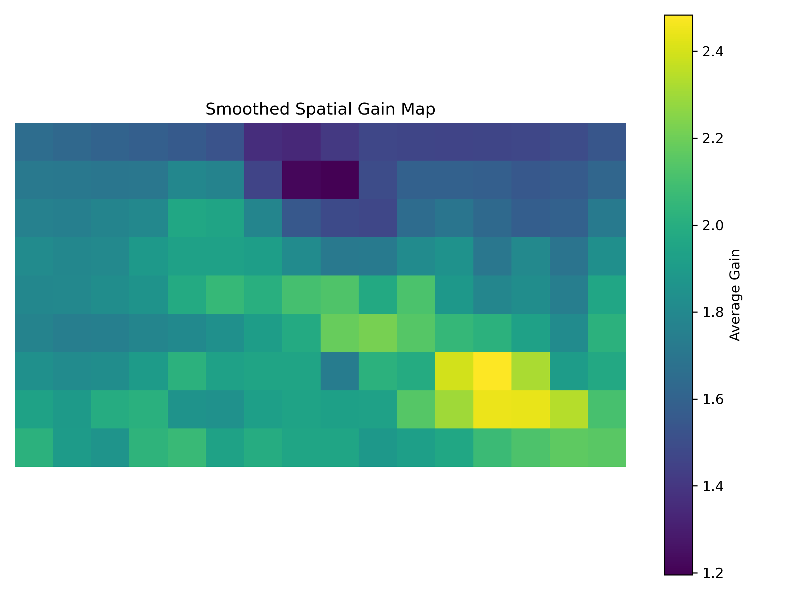
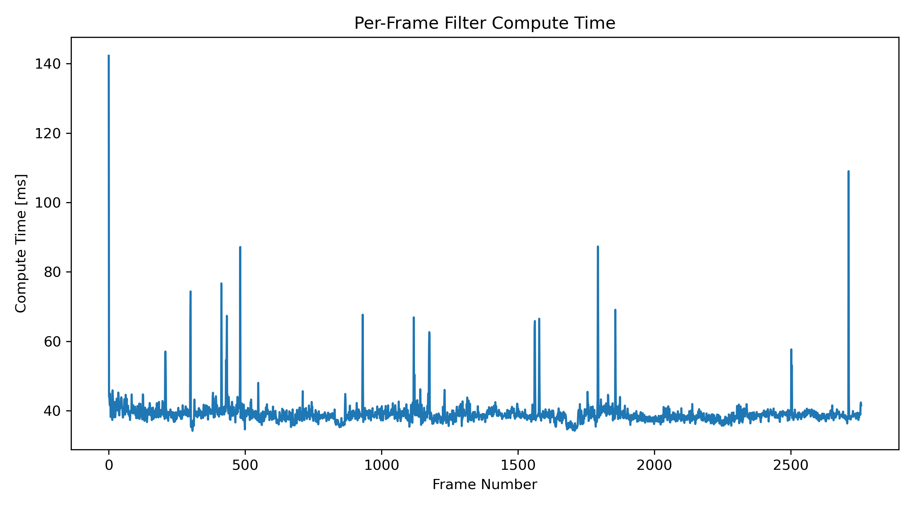
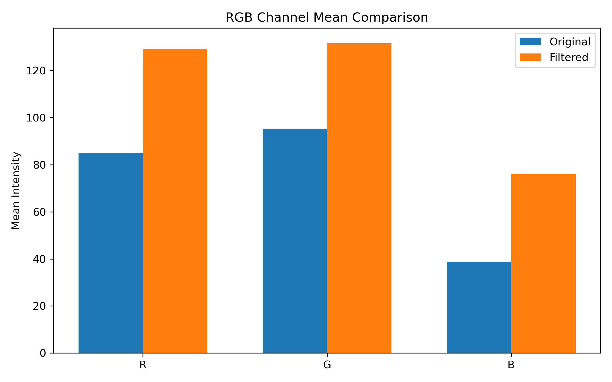

This page presents the real-time underwater image recovery system implemented for the CS 766 fish identification project. The system uses a spatial RGB gain map with temporal feedback smoothing to reduce color distortion, turbidity effects, and low-visibility artifacts before machine learning inference.
Each video frame is represented as an RGB vector field:
\[ I_k(i,j) = \begin{bmatrix} R_k(i,j) \\ G_k(i,j) \\ B_k(i,j) \end{bmatrix} \]The local mean RGB value over each spatial tile is:
\[ \bar{I}_{k,m,n} = \frac{1}{|\Omega_{m,n}|} \sum_{(i,j)\in \Omega_{m,n}} I_k(i,j) \]The raw spatial gain is computed as:
\[ G^{\text{raw}}_{k,m,n} = \frac{I_{\text{target}}} {\bar{I}_{k,m,n} + \epsilon} \]The raw gain is clipped to prevent instability:
\[ G^{\text{clipped}}_{k,m,n} = \text{clip} \left( G^{\text{raw}}_{k,m,n}, G_{\min}, G_{\max} \right) \]Temporal feedback smoothing is applied:
\[ G_{k,m,n} = \alpha G_{k-1,m,n} + (1-\alpha)G^{\text{clipped}}_{k,m,n} \]The gain map is expanded back to full resolution:
\[ G_k(i,j) = \text{resize} \left( \text{blur}(G_{k,m,n}) \right) \]The corrected image is computed:
\[ I^{\text{corrected}}_k(i,j) = I_k(i,j) \odot G_k(i,j) \]Input: video frame I_k Output: corrected frame 1. Convert BGR → RGB 2. Normalize values 3. Downsample frame 4. Divide into tiles 5. Compute tile mean RGB 6. Compute raw gain 7. Clip gain 8. Apply temporal smoothing 9. Blur + upsample gain 10. Apply gain to frame 11. Normalize output 12. Convert RGB → BGR
The system implements a feedback-controlled gain update where the previous gain map is blended with the current measurement. This prevents abrupt frame-to-frame correction changes and stabilizes the image recovery process over time.
\[ G_{k,m,n} = \alpha G_{k-1,m,n} + (1-\alpha)G^{\text{clipped}}_{k,m,n} \]
To enable real-time execution, the gain map is computed on a downsampled image before being expanded back to full resolution. This reduced computational cost by approximately 3×, increasing throughput from ~8 FPS to 25.54 FPS.
| Method | Compute Time | FPS |
|---|---|---|
| Full Resolution | ~120 ms | ~8 FPS |
| Downsampled | 39.15 ms | 25.54 FPS |

Comparison between the original and filtered frame demonstrates the image recovery process. Turbidity effects are reduced, and overall color balance is improved.

This spatial gain map shows the per-pixel correction applied across the frame. Regions with higher gain correspond to areas experiencing stronger attenuation.

Per-frame compute time remains stable around 39.15 ms with occasional spikes due to system-level overhead.

The RGB mean comparison shows convergence toward a balanced target distribution, consistent with the feedback control objective.
The proposed method draws from established principles in feedback control, color constancy, and real-time image processing.